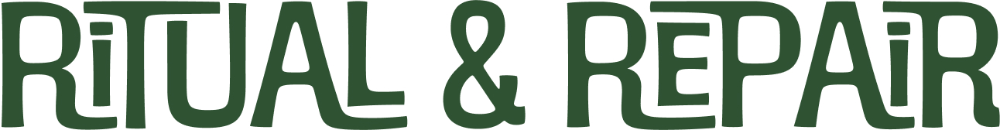
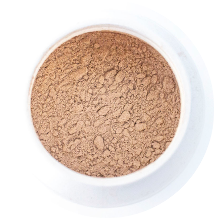

Mt. Vitality Brand Identity & Packaging Design
Graphic Design
This project was an assessment task for my Graphics 2 course at UNSW which I took in early 2022.

Concept Statement
Vitality is associated with many things, most commonly with energy and life. For many, achieving better health, more energy, and overall improved living is a goal. But it can be hard to maintain a healthy lifestyle, with the many unhealthy but tempting foods and the desire to sit and stare at screens all day. Maintaining healthy habits is an upwards climb and good health is the mountain peak. It made sense to me to portray this experience as a mountain, leading to the brand name ‘Mount Vitality’. Both objects chosen for this assessment are involved in the process of building muscles, which is itself a part of fitness and health.
The object for ritual is protein powder, which helps internally as an essential nutrient is not only good for general health, but specific protein sources can be helpful in developing muscle, hence why it is named ‘Growth’.
The object for repair is named ‘Resilience’ and is a resistance band which is pulled to create enough resistance that it requires strength to keep pulling but is gentler compared to heavier forms of muscle building like weightlifting. It can often be used as an accessory to other exercises like stretches. So not only is the latex band made of a resilient material, using the resistance bands regularly builds both muscle and resilience.
Flat vector illustrations form the graphics style of the brand packaging. The simplistic nature of flat illustrations means that there is reduced visual clutter, both in illustrative details but also in colour used. This leads to a clean and uncomplicated visual design. It also enforces consistency across visual elements, namely the mountain imagery combined with the depictions of people using product. It is straightforward to draw both in the same style and both have been decided as necessary for the product packaging, the former because it enhances the brand’s concept, and the latter because including something similar to a demonstration for products like fitness and exercise equipment may peak a casual buyer’s interest. People are unlikely to buy something if they don’t understand how it is used or what it is used for.
The packaging should let the consumer know that Mount Vitality is about developing a better, healthy lifestyle.
Identity
The Mount Vitality logo is formed from the letters ‘M’ and ‘V’. The ‘M’ mimics the silhouette of two mountain peaks. The ‘V’ points out from center below. The two letters are joined by horizontal lines that extend from the top of the ‘V’ to the bottom of the ‘M’.
The logo can be used in black for monochrome settings, or one of the greens from the colour palette. If using the logo on a dark colour background, a white variation is acceptable.
In larger uses of the identity, the logo is accompanied by the brand name shortened to ‘Mt. Vitality’ and the slogan ‘Reaching Peak Health’. This slogan refers to both the mountain imagery in the name and logo with the use of ‘reaching peak’ and to the type of products sold by the brand with the reference to ‘health’. Consumers can immediately understand that Mount Vitality products help people with wellness, health, and fitness. This text is to be placed below the logo, center aligned, with the brand name first, followed by the slogan.
Smaller uses of the identity can follow the examples on the bottom row. Rather than an outline, the logo is entirely filled in to create a monochrome silhouette. This is to reduce visual clutter when the identity is scaled down. At a smaller size, the text is optional depending on whether there is enough space for it to be readable.
Colour Palette
The primary colour palette is green, black and white. Four different shades are chosen to represent green:
- dark seafoam green
- light kelly green
- lime green
- spearmint green
The selected muted shades of green support the nature and mountain imagery of the brand and concept. Green also alludes to growth and rejuvenation, which can relate to the brand products and how they help the consumer build with fitness and health.
The muted, less saturated tones communicate a more mature atmosphere. This may appeal to consumers with a more serious approach to improving their health and wellbeing.
The dark green, black, and white should be used for text elements, depending on the background. There should be a strong contrast between the text colour and the background colour. Do not put text on backgrounds where the colour does not create enough contrast with the text.
Typography
Ritual / Growth
Object 1: Protein Powder
For many, making a protein shake or smoothie with some extra protein is a habit and a fun part of a daily routine. Often enjoyed in the morning, or made in preparation for a work out session, it can be part of a ritual associated with maintaining a healthy lifestyle. In my household, it is part of our routine to make a smoothie with fruits and protein powder almost every day.
It is given the name “Growth’ because of how protein powder can be used in addition to exercise to help build muscles. It is especially beneficial for those who don’t receive enough protein from the food they eat. There are many different sources of protein, including plant-based sources (HSPH, n.d.).
Most existing protein powders come packaged in plastic cylinder container bottles or in large plastic pouches. A cylinder bottle was chosen over the pouch as the pouch opening struggles to stay fully open while it is being used, whereas a container with a lid made for a smoother retrieval. Mount Vitality’s Growth protein powder follows the standard of a tall container, a flat container is more likely to create a mess while opening.
However, in an effort to be more sustainable, packaging made of cardboard was chosen over the usual plastic container. Cardboard is a lightweight and easy to use material for packaging. It is also less complicated when it comes to recycling. These cardboard tubes can be internally lined with food safe aluminium foil to protect the product from external moisture.
The opening of the container is initially sealed with a foil lid which is removed the first time the product is opened. This protects the powder until the customer has bought it and opened it. The package lid itself is made of cardboard. The height of the lid will decrease the likelihood of the container opening on accident.
A small plastic scoop is put in at the top of the powder. The scoop is plastic so that it can be reused even if it comes into contact with moisture. The end of the scoop handle is a circular hole. There is a cutout tab inside the opening of the container, which can be pulled out and folded to form a hook on the inside. When the amount of protein powder inside decreases, the scoop can be hung from the hook so that it is easy to find and reach upon every opening. This eliminates the frustration of having to find a scoop that has become buried inside the powder, or is hard to grab.

2D Net of Tube Container

2D Net of Tube Lid

2D Net of Tube Container with Packaging Faces

2D Net of Tube Lid with Packaging Faces
Repair / Resilience
Object 2: Resistance Bands
The object for repair is a resistance band that my mother was told to use by her physiotherapist. She had damaged tendons in both her shoulders and using the resistance bands for arm exercises was supposed to help her rebuild strength. This is why this object has been chosen for the theme of ‘repair’.
Strength is needed to pull the resistance bands and hold them in place when the stretchy material wants to snap back together. It is less intensive compared to heavier forms of muscle building like weightlifting and can often be used as an accessory to other exercises like stretches.
Not only is the rubbery latex a resilient material but the activity of using the resistance bands regularly also builds resilience and even muscle. Hence why the object is named ‘Resilience’.
Resistance bands in this material tend to be thin and flimsy. They’re lightweight and easy to carry around, as long as it doesn’t get tangled in anything else. This is why the package will include a reusable pouch that can be used to hold the product even when the cardboard packaging has been disposed.
The bands can easily be folded, so a flat box would work well as packaging. The packaging consists of an open box and a sleeve that fits around it and encloses the product. By using a sleeve, it is possible to use the same imagery of a mountain range wrapping around the object, which could increase the consistency of design within Mount Vitality brand’s product range. The illustrations occupy only roughly 50% of the surface area since the less ink used then the de-inking process when the packaging gets recycled will be easier (Sustainable Graphic Design for Print Media n.d.).
To open the package, simply push or slide the inner box out of the sleeve opening. The resistance bands will be folded on top of the carry pouch. The rubbery texture of the bands may not pair well with the cardboard of the box, so having something soft in between may improve the unpackaging experience.
The inner box is more plain in design compared to the much busier outer sleeve. The inside of the box displays the Mount Vitality logo. The long sides of the box has the word ‘stretch’ on it. This text is revealed as the inner box is slid out of the sleeve. It refers to both the nature of the product, it is a stretchy object, and to how the object can be used during a workout.
Resistance bands tend to come in different strengths, some are easier to pull and others much harder. For the mockup, only one strength will be used, but the design could potentially be expanded to include a series of different strengths and types of resistance bands.


Front View. Open Package

Front & Side View. Closed Package

Side & Back View

2D Box Net with Measurements

2D Box Net with Measurements

2D Outer Sleeve Net with Measurements

2D Outer Sleeve Net with Packaging Design
References
Workout Supplements n.d., Havard School of Public Health (HSPH), accessed 27 April 2022 ,
Australasian Recycling Label n.d., Planet Ark’s Recycling Near You, accessed 28 April 2022 ,
Sustainable Graphic Design for Print Media n.d., UNSW Moodle Video, Dr Rebecca Green, Sydney, accessed 31 March 2022.